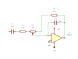

The circuit — 05
The gain stage
One op amp, one pot, ±10 dB. The idea is sound and the values are right; as drawn, the op amp’s two inputs are the wrong way round.

What it is meant to do
C1 (100 µF) blocks DC at the input. Then R1 (4.7k), the 10k track of RV1 and R2 (4.7k) run in series from the input to the op amp’s output, and the wiper goes to the op amp’s input. C2 (220 pF) sits between that input and the output.
Wired as an inverting amplifier, the wiper is a virtual earth, and the gain is the resistance on the output side of the wiper over the resistance on the input side. Turning the knob moves resistance from one side to the other:
| RV1 wiper | Input side | Output side | Gain |
|---|---|---|---|
| At the input end | 4.7k | 14.7k | +9.9 dB |
| Centre | 9.7k | 9.7k | 0 dB |
| At the output end | 14.7k | 4.7k | −9.9 dB |
That is a neat single-knob trim: unity at the centre detent, symmetrical either side. C2 rolls
the top off above about 50 kHz at full gain. The team’s
LTspice model variable gain.asc has the same values.
Swap pins 2 and 3
On the sheet, the wiper goes to pin 3, the OPA1641’s + input, and ground to pin 2, the − input. The feedback through R2 and C2 then arrives at the + input: positive feedback, so the output swings to a rail and stays there. With the wiper on pin 2 and pin 3 grounded, the stage works as above.
The stage inverts, so if it ends up in the chain with the two bands, the module as a whole inverts. That only matters for how J1’s balanced pins are wired, but it does matter.